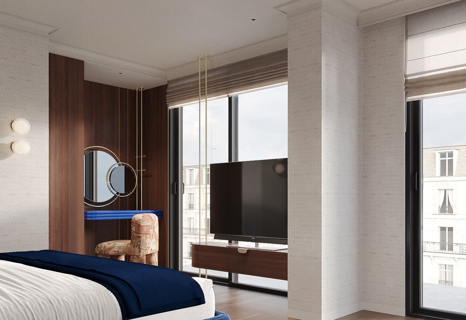
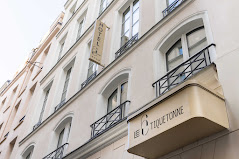
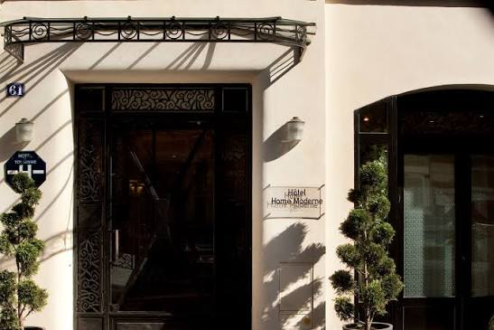
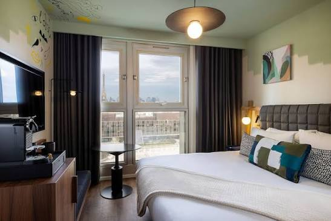
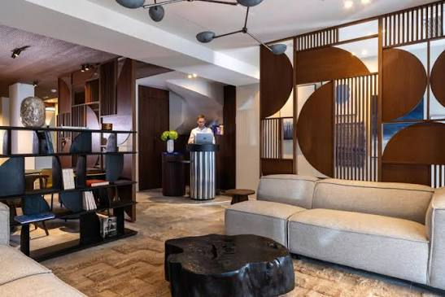

01 / CFO
Courants forts et distribution électrique
TGBT, tableaux divisionnaires, chemins de câbles, alimentation des équipements, appareillage, éclairage et distribution des chambres et parties communes.
SERILEC accompagne les rénovations, restructurations et aménagements hôteliers avec des installations électriques adaptées aux chambres, parties communes, restaurants, espaces techniques et zones recevant du public
Un projet hôtelier réunit des enjeux de distribution électrique, de confort, de sécurité, de réseaux et de coordination architecturale. SERILEC intervient sur les lots courants forts, courants faibles et sécurité incendie, depuis les études et la préparation jusqu’aux essais, à la réception et à la maintenance.
TGBT, tableaux divisionnaires, chemins de câbles, alimentation des équipements, appareillage, éclairage et distribution des chambres et parties communes.
Réseaux informatiques, Wi-Fi, interphonie, contrôle d’accès, vidéosurveillance et autres équipements de communication et de sûreté selon les besoins du projet.
Déploiement et adaptation des installations de sécurité incendie, coordination avec les autres lots techniques, essais et préparation de la réception.
Sélection de références publiées sur le site SERILEC

Transformation d’un immeuble de bureaux en hôtel 4 étoiles de 37 chambres sur 7 niveaux, avec restructuration des courants forts et faibles.

Courants forts et faibles, SSI, sonorisation et éclairage décoratif dans le cadre de la transformation de l’ancien Hôtel Bellechasse.

Rénovation complète avec éclairage, câblage, CFO/CFA, SSI, Wi-Fi, interphonie et réseau informatique.

Lots techniques électriques complets pour un hôtel de 62 chambres sur 8 niveaux : CFO, CFA, SSI, contrôle d’accès et vidéosurveillance.

Lots CFO, CFA et SSI, contrôle d’accès et vidéosurveillance pour un hôtel de 45 chambres.

Rénovation complète des lots techniques d’un hôtel de 26 chambres, avec courants forts, courants faibles et appareillage.
Présentez-nous votre opération, son phasage et ses contraintes techniques pour échanger avec l’équipe SERILEC.